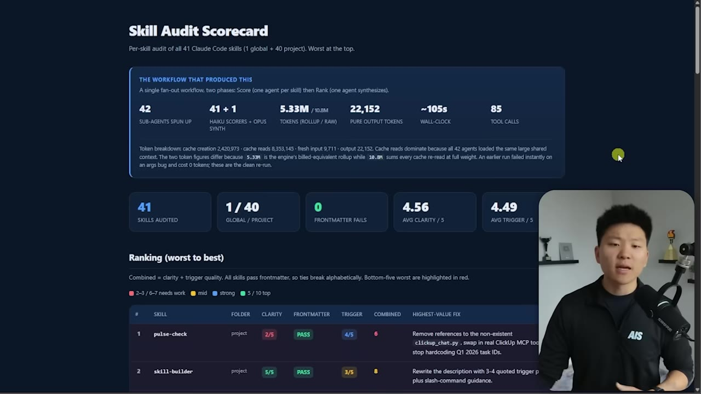
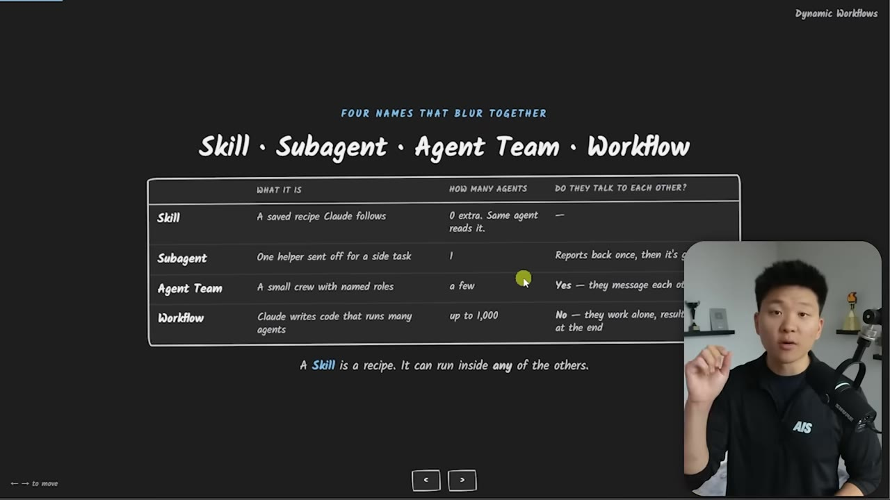
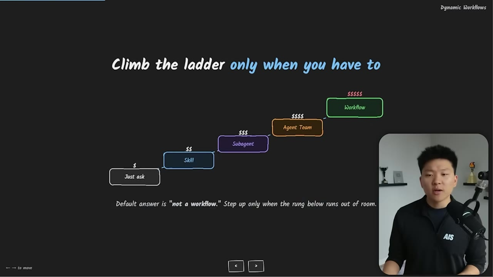
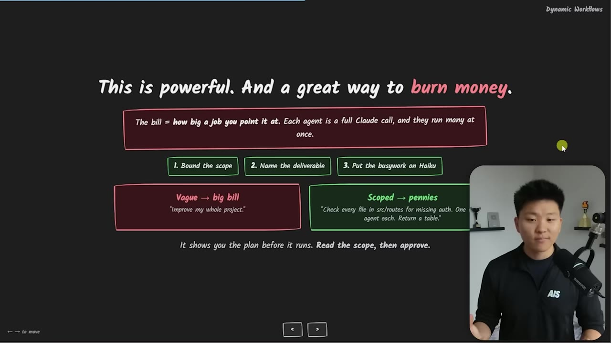
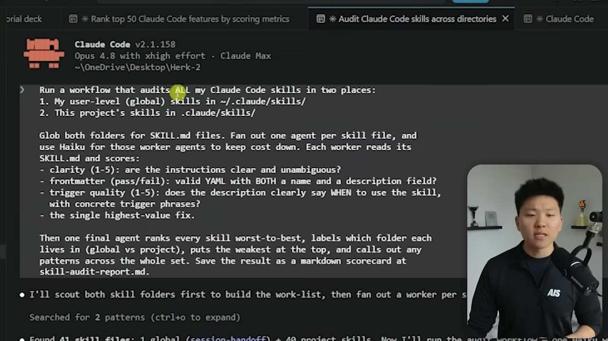
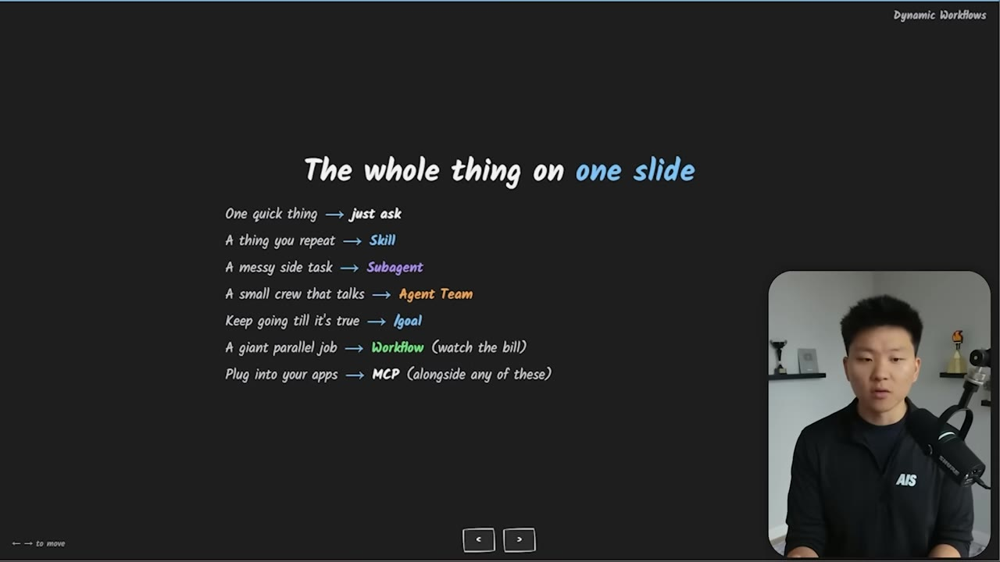

Claude Code Dynamic Workflows: When the Parallel-Agent Feature Is Worth the Bill
Dynamic workflows arrived with Claude Opus 4.8 — Claude writes a script that fans out dozens of agents in parallel. Here is where it sits next to skills, sub-agents, agent teams, and /goal, and how one prompt burned through half a $200 plan.
Watch on YouTubeThe short version
- Dynamic workflows ship with Claude Opus 4.8 — Claude writes a JavaScript file that fans out many sub-agents in parallel, then merges their results back to the main session.
- The five primitives blur together but aren't interchangeable: skill = recipe, sub-agent = isolated side task, agent team = a crew that talks, /goal = a loop until done, workflow = a wide parallel job.
- /goal is depth (one agent looping until done = true); a workflow is width (50+ agents each doing one pass, no end-criteria check).
- Cost scales with how big a job you point it at — each agent is a full Claude call with its own context window. One unscoped desktop crawl ate half a $200/month plan in ~30 minutes.
- Ask one question: does this break into many independent pieces that can run at once? If not, a workflow is overkill — most knowledge work doesn't need it.
01 · The hook
A workflow audits every skill at once
The demo that opens the video: a dynamic workflow that read all 41 Claude Code skills, spun up one Haiku scoring agent per skill, then fed every score into a single Opus synthesis agent. Because the agents ran in parallel it finished fast, but it pulled a lot of input tokens — the rollup was billed at 5.33M while the raw re-read summed to 10.8M. Output was small, so it wasn't expensive. The result is an HTML scorecard ranking the skills worst to best with the single highest-value fix for each.

02 · The primitives
Five features that blur together
The reason workflows are confusing is that Claude Code already has sub-agents, agent teams, and /goal — they all feel similar. What actually changes between them is how many agents are in the loop and whether they can talk to each other. A skill is a reusable recipe. A sub-agent is a parallel worker with its own context window that talks back only to the main session, never to other sub-agents. An agent team is a crew that does talk to each other and shares a task list — closer to a group chat with roles, tools, and specializations. A workflow is Claude writing a script that runs many lone sub-agents and merges the results at the end.

03 · The ladder
Who holds the plan
The separating question is who holds the plan. With normal Claude and sub-agents, the whole plan lives with Claude in the main session. With a workflow, Claude writes a JavaScript file and that is what executes and delegates — you describe the end goal, Claude builds the pipeline that runs it. Those workflow files can be saved and re-run later. Climbing the ladder — ask, skill, sub-agent, agent team, workflow — buys more functionality but also more risk, more autonomy, and more money.

04 · Depth vs width
/goal and workflow are opposites
The other confusion is /goal versus workflow. /goal is depth: one agent (sub-agents can still spin up) takes multiple turns and passes until done = true — you could leave it running 24 hours against a criterion. A workflow is width: many sub-agents each do one pass on different pieces, then everything synthesizes at the end. There's no endless loop checking a criterion — the agents execute a plan fixed from the start and shoot off their result.

What would be interesting is if you combine these two together — maybe a workflow within a /goal. But you'd want to be very careful about that level of autonomy, because it's powerful, and a great way to burn money.— Speaker
05 · The bill
Scope it or it gets expensive
Are workflows just a scheme to make you burn tokens? Probably not — there's real value, it's just a question of whether you actually need it, and a lot of the time it's overkill. The bill depends on how big a job you point it at: each agent is a full Claude call with its own window and its own context to read, and many get spun up. Most of the cost lands on input rather than output, but it still adds up. The fix is the same discipline as /goal — a vague request makes it loop or fan out forever.

- Bound the scopedon't point it at "everything" — name the exact target.
- Name the deliverablebe explicit about the output you want back.
- Put the workers on Haikuthe fan-out agents don't all need Opus.
- Read the script, then approveit shows you the plan before it runs.
06 · The run
The actual prompt, and where the files land
The real prompt: "Run a workflow that audits all of my Claude Code skills in two places — my user-level global skills and this project's skills," graded on clarity, frontmatter pass/fail, and trigger quality, with one final agent ranking every skill worst to best, all workers on Haiku. Claude asked permission before running — you can also view the raw script — and /workflows shows everything in flight: all 41 agents, their model, tokens used, tools, and runtime. One gotcha: by default the saved workflow files land in a global Claude Code directory, not your project, so you may have to tell it to save them into .claude/workflows.

/effort offers low, medium, high, extra-high, max — plus UltraCode, which is extra-high reasoning plus workflows by default. On that mode Claude bypasses a lot of permission prompts and just starts orchestrating, so it's the most expensive setting. Typing "workflow" in a prompt highlights in rainbow but doesn't auto-invoke one; the reliable trigger is "set me up a dynamic workflow to do this."07 · The decision rule
The whole thing on one slide
The takeaway is a routing table, not a mandate to use the newest feature. Knowing what a feature does and when it beats the alternatives is separate from needing to use it daily — the test is whether it solves a pain point you have right now.

Quick thing
just ask Claude Code.
Something you repeat
use a skill.
Messy side task
use a sub-agent.
A crew that talks together
use an agent team.
Keep going until a criterion is met
use /goal.
A giant parallel job
use a dynamic workflow — carefully.
Connect your data
MCPs, CLIs, and API endpoints plug into any of them.